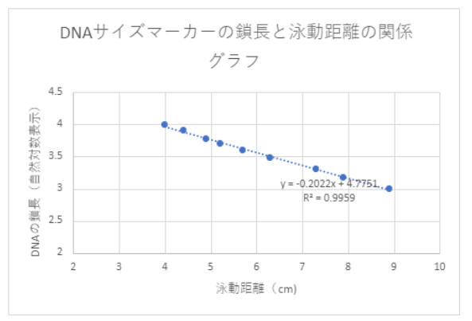

碱性小核苷酸法和琼脂糖凝胶电泳
今天，我完成了一个很有趣的实验，就是用碱性溶解法从大肠杆菌中提取质粒DNA，并用限制性内切酶切割后进行电泳分析。质粒DNA是一种可以在细胞内自我复制的小圆形DNA分子，它可以携带一些特殊的基因，比如抗生素抗性基因或荧光基因。限制性内切酶是一种可以识别并切割特定DNA序列的酶，它可以用来分析DNA的结构和功能。电泳分析是一种利用电场使DNA分子按照大小迁移的方法，它可以用来观察DNA的片段和长度。
这个实验的过程其实很简单，就是按照老师给的步骤操作，但是也有一些需要注意的地方。比如，在加入碱性溶液的时候，要轻轻地翻转试管，不能搅拌太猛，否则会破坏DNA的结构。还有，在加入冷冻保存的溶液的时候，要尽快放入冰箱，因为这样可以让DNA沉淀下来。最后，在进行电泳分析的时候，要小心地把DNA溶液加入到凝胶槽里，不能让它溢出来，也不能让它跑到别的槽里去。
这个实验的结果还不错，因为我成功地从大肠杆菌中提取了质粒DNA，并且用限制性内切酶切割后，得到了预期的电泳图谱。从电泳图谱上，我可以看到，没有切割的质粒DNA只有一个约2000bp的条带，而切割后的质粒DNA有两个条带，一个约2000bp，一个约560bp。这说明，我用的限制性内切酶可以在质粒DNA上找到两个切割位点，并且把它切成两个片段。这两个片段分别是质粒的载体部分和插入的遗传子部分。我觉得这个实验很有意义，因为它可以让我了解质粒DNA的结构和功能，也可以让我掌握限制性内切酶和电泳分析的原理和方法。

我的实验操作有一些不足之处。比如，我在用微量移液器的时候，有时候会分量不准，导致试剂的浓度不均匀。还有，我在进行电泳分析的时候，有时候会把DNA溶液加入到错误的槽里，或者加入太多或太少，影响了电泳的效果。我觉得这些都是我需要改进的地方，我要多加练习，提高我的实验技能和准确性。
|